TSGR：淘宝搜索生成式召回
英文标题：TSGR: Taobao Search Generative Retrieval
- 作者：Tianyu Zhan、Gui Ling、Tong Xiong、Kunhai Lin、Yang Wang、Kaixuan Zhang、Zhihong Chen、Yuliang Yan、Dan Ou、Shengyu Zhang、Haihong Tang、Bo Zheng
- 机构：浙江大学；淘宝天猫集团
- 公开时间：2026-07-21
- 论文入口：arXiv:2607.18796
- 方向：电商搜索、生成式召回、Semantic ID、商业价值建模、检索与预排一体化
- 版本状态：当前可核验版本为 arXiv v1 预印本。PDF 中的会议简称、年份、ISBN 与 DOI 均为 ACM 模板占位字段，不能据此认定正式发表会议或出版年份
- 代码状态：截至本次阅读，论文页面与正文未给出可独立核验的公开代码仓库
1. 背景和问题
生成式召回把传统“编码查询—向量近邻检索—读取商品 ID”的过程改写为序列生成：模型接收查询、用户画像和历史行为，直接自回归地产生目标商品的 Semantic ID（SID）。SID 通常是一个分层离散码，例如先产生类目或粗粒度簇，再产生细粒度簇，最后落到簇内商品位置。它的工程吸引力在于，商品全集被压缩进模型参数和受约束的 token 空间，不必为每个请求维护一套大规模向量近邻查询；在训练层面，目标商品可以直接作为序列监督，也减少了双塔召回依赖负采样所带来的偏差。对于拥有海量商品和复杂用户上下文的电商搜索，这种“一个模型直接生成候选”的形式确实有机会缩短传统级联链路。
但工业搜索并不只要求语义相关。两个商品可能都与“实木餐桌”匹配，却在曝光后点击概率、购买转化、卖家质量和成交价值上有显著差异。传统排序和预排可以读取丰富的商品侧特征，把这类差异写入 CTR、CVR 或成交价值分数；普通生成式召回的 beam search 排序依据却主要是 SID token 的生成概率。更麻烦的是，候选商品只有在解码后才确定，模型在生成候选之前无法像传统预排那样批量读取每个候选的完整侧信息。于是语义相关性和商业价值之间出现一个结构性断点：召回若先漏掉高价值商品，后面的精排能力再强也无法补救。
现有生成式召回主要优化语义匹配，对商品商业价值不敏感：SID 构建不感知价值，候选排序又无法使用商品侧信息，因而高价值商品可能在召回阶段被漏掉或被排到后面。
论文把这个断点拆成两个可操作问题。第一是 value-insensitive SID construction：常见 RQ-KMeans 或 RQ-VAE 主要维持语义邻近，同一簇内商品的末级 token 并不反映曝光、点击或支付价值；而且每件商品只有一个全局固定 SID，无法表达它在不同查询意图下的相对价值。例如某手机壳总体点击不高，但在“磁吸”查询下可能是更合适的候选，全局次序会把这种条件优势抹平。第二是 value-unaware candidate ranking：beam search 用序列似然排候选，生成阶段又拿不到候选商品的多窗口行为、类目、卖家统计、查询—商品共现等侧信息，因此高生成概率不等于高业务价值。
一个看似直接的补丁，是在生成召回之后继续接一个传统预排模型。论文认为这会留下两类错配：生成器在自身召回分布上优化 SID 似然，预排却通常在多通道候选池上学习价值，两者数据分布和目标不同；同时还要维护两套模型、两段特征和两次服务。TSGR 的目标因此不只是“给 SID 加一个点击排序”，而是在同一套生成主干中完成三件事：QP-SID 在标识符层面保留多个查询条件价值次序，VRM 在候选产生后补入商品侧信息并完成价值重排，渐进训练让语义映射、个性化召回和商业目标在同一参数空间中依次对齐。
这篇工作的证据也应按工业系统论文来读。离线 HR@1000 能回答相关商品是否进入前 1000 个候选，却不能单独证明点击、成交或 GMV 改善；线上 A/B 可以补足业务指标，但必须确认流量比例、时长、改动范围和显著性披露是否充分。本文声称离线从 FORGE 的 0.7735 提高到 VRM 的 0.8651，并在线获得 IPV、成交笔数和 GMV 增益。真正需要核验的是：这 0.0916 应解释为 9.16 个百分点而不是相对 9.16%；各方法在表中属于不同阶段的互斥配置，不是可以任意累加的提升；线上 TSGR 是现有多通道召回旁边的新增通道，其内部候选绕过预排，而不是替换淘宝搜索的全部召回与排序系统。
2. 方法
TSGR 的主链路可以概括为“先让标识符携带条件价值，再让同一主干读取候选侧信息，最后用两阶段监督把生成与排序联合起来”。模型以 Qwen2.5-0.5B 为生成骨干，解码三层 SID；前两层用有效前缀树限制候选，第三层在同一语义簇内展开多个效率次序。beam search 得到候选后，VRM 复用生成器隐藏状态，融合商品特征、商品向量和 SID 向量，再输出价值分数重排。整套结构的重点不是取消自回归生成，而是让“被生成的路径”和“生成后被保留的顺序”都能感知商业目标。
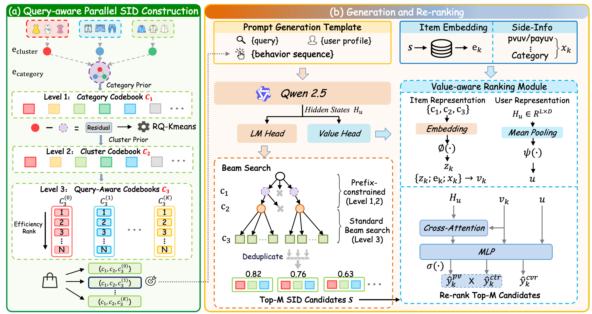
Figure 1 给出了端到端数据流。 左侧先用类目与商品簇建立前两级语义码，再在每个簇内建立默认点击次序和三个 term 条件次序，形成四条并行的末级 SID 路径；中间生成主干按层执行 beam search，前两层受合法前缀约束，末层在选中的效率码本中展开；右侧 VRM 等候选商品确定后读取侧信息，用共享隐藏状态产生用户表示，再把生成分数与价值分数组合。这里的“一体化”是共享生成主干、嵌入和训练目标，并不意味着所有算子发生在同一个时间点：商品侧特征仍然只能在候选产生后读取。图中的关键工程折中是把检索与预排放进一个服务模型，同时保留“先生成、后重排”的因果顺序。换言之，QP-SID 调整候选进入 beam 的先验机会，VRM 调整候选产生后的相对位置，两者优化对象和生效时刻不同，不能用一个统一分数的直觉把它们混为一层。
2.1 Query-aware Parallel SID：把价值次序写进标识符
符号解释：QP-SID 的前两层先保持语义组织：商品 \(i\) 有连续向量 \(e_i\in\mathbb{R}^d\)，属于类目 \(G\) 和更细的商品簇 \(C\subseteq G\)；\(e_{\mathrm{cat}}\) 与 \(e_{\mathrm{cluster}}\) 分别是类目和簇中心，\(r(C)\) 是交给 RQ-KMeans 的残差。论文先得到 \(8192\times4\times8192\) 的中间层级，再为部署成本把前两级合并成大小 \(32768\times8192\) 的语义前缀；这样同一簇商品共享前缀，类目树和簇结构都被写入 SID。
符号解释：第三层是大小为 8192 的效率码本，解决簇内“谁应该占更靠前 token”的问题。\(\pi_0\) 是簇 \(C\) 的全局默认次序，\(s_0(i)\) 是商品 \(i\) 的 30 天点击数；\(t\) 是查询分词后的代表 term，\(s(i,t)\) 是商品在 term \(t\) 下的点击数，\(\operatorname{cov}(t,C)\) 是 term 对簇内商品的覆盖率，\(\pi_t\) 是该 term 条件下的商品次序。论文为每簇选择三个代表 term，并过滤覆盖率超过 80% 的弱区分词。每个簇最终保留一条默认路径和三条 term 路径；较早的末级索引跨簇共享更多训练信号，也更容易被 beam search 覆盖。
训练样本需要根据当前查询动态选择末级标签。若查询 (q) 的分词集合与簇的代表 term 集有交集，模型取簇共现点击最高的匹配 term；否则回退到默认次序。于是同一商品可以在不同查询下拥有不同的第三层 token：
符号解释：(T_C) 是簇 (C) 的三个代表 term，(operatorname{terms}(q)) 是查询分词，(operatorname{rel}(t,C)) 是 term 与该簇的共现点击量，(t^*) 是多匹配时选中的最高相关 term；(c_3(i,q)) 是商品 (i) 在查询 (q) 下的动态末级 SID。前两层仍表示类目和簇，只有第三层改变，因此系统在保留语义前缀的同时，用条件路径重排簇内商品。
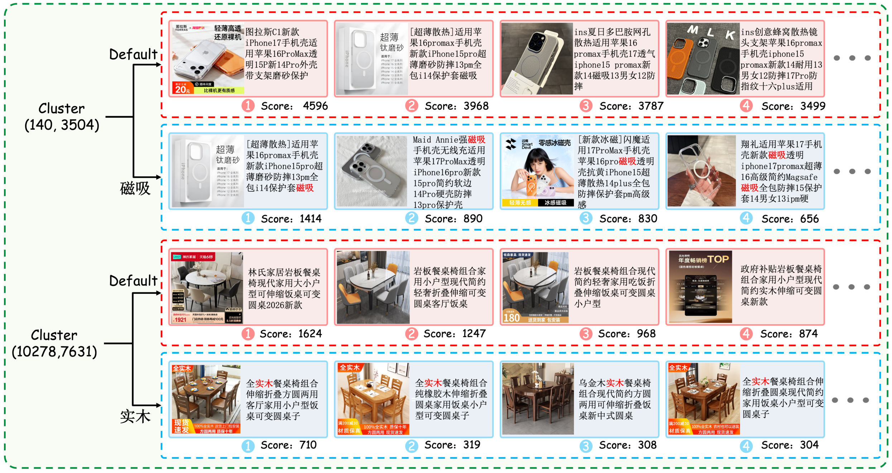
Figure 8 把“并行次序”落到两个商品簇上。 手机壳簇在默认路径中按总体商业价值排列，但查询条件“磁吸”会把标题明确匹配磁吸意图的商品提前；餐桌簇同理，“实木”条件可以提升在全局次序中并不靠前、却更符合当前意图的商品。图旁分数只用于各自行内排序，默认分数和 term 条件分数由不同统计口径产生，不能跨行直接比较绝对大小。它说明 QP-SID 并不是为商品附加一个静态“价值等级”，而是给同一语义簇准备多个可选的簇内坐标系，服务时由查询决定使用哪一个坐标系。由于第三层 token 的早晚还会改变训练频次和 beam 覆盖机会，这个次序并非只在展示层重排，而会真正反馈到生成概率；也正因此，行为统计的偏差会沿 token 位置被模型吸收。
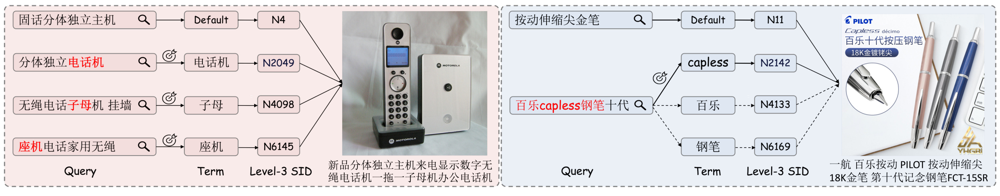
Figure 9 继续解释 \(c_3(i,q)\) 的路由。 左侧两个查询都指向电话机类商品，但分别匹配“电话机”和“座机”，因此相同目标商品可通过不同的 term 路径获得末级 token；右侧“百乐 capless 钢笔十代”同时命中 capless、百乐和钢笔，系统只选择与簇共现关系最高的 capless 路径，其余匹配丢弃。该硬选择保持了单条 SID 标签和受约束解码的简单性，却也意味着路由统计若受头部点击偏置、分词错误或新词冷启动影响，正确路径可能在生成前就被排除；论文没有使用可学习的软混合去缓解这一风险。案例还表明路由的判别粒度是 term—cluster 共现，不是对每件商品重新估计价值；它降低了线上计算，却无法表达同一 term 下商品之间除历史点击外的复杂条件价值，后者要交给 VRM 补足。
2.2 Value-aware Ranking Module：同一主干完成召回与预排
QP-SID 把价值先验写进 token 位置，但它依旧只使用聚合点击次序，无法代替候选级商品特征。VRM 等 beam search 得到候选 (k) 后，为每个商品拼接三类表示：离线特征向量 (x_k) 包含多时间窗行为、类目、卖家全局统计和查询—商品共现；商品向量 (e_k) 补回 SID 量化损失的信息；三个 SID token 经主干嵌入层和 MLP 得到 (z_k)。最终候选表示为：
符号解释：((c_1,c_2,c_3)) 是候选的三级 SID，(operatorname{Emb}) 复用生成主干的 token 嵌入，(phi) 是压缩 MLP；(x_k) 是商品侧结构化特征，(e_k) 是离线商品向量，(z_k) 是 SID 表示，方括号表示拼接。三个来源分别覆盖短期商业统计、SID 量化时损失的连续语义以及生成路径本身，消融也显示完全去掉商品嵌入会明显损坏头部命中率。
用户侧不重新跑编码器，而是复用提示词长度 (L) 上的主干隐藏状态 (H_u\in\mathbb{R}^{L\times D})。全局用户向量由所有 token 均值池化后过 MLP；候选向量再作为 query，对完整用户上下文做交叉注意力，以捕捉与当前商品相关的局部行为：
符号解释：(H_u[j]) 是用户提示第 (j) 个 token 的隐藏状态，(D) 是主干维度，(psi) 是用户侧 MLP；(u) 表示全局偏好，(a_k) 是候选 (k) 对用户序列选择性聚合后的交互表示。在交叉注意力中，(v_k) 为 query，(H_u) 同时作为 key 和 value。这样只需对候选做较轻的注意力，不增加第二个完整用户编码器。
VRM 把 (a_k,u,v_k) 再拼接，分别预测曝光倾向、点击率和转化率；论文在线选择 PV 与 CTR 分数乘积重排，CVR 头仍作为联合训练任务存在：
符号解释：(hat y_k^s) 是候选在行为任务 (s) 上的预测，(sigma) 是 sigmoid，(S_k) 是推理重排分数。论文消融中 PV×CTR 的总体效果最好，加入 CVR 乘积没有继续改善 HR；这不是说转化价值不重要，而是当前 HR 标签与曝光/点击更直接，且 CVR 更稀疏。VRM 的优势来自同一主干上的联合优化和隐藏状态复用，不应被表述为完全“无计算成本”；论文只声称没有额外线上延迟，缺少模块级毫秒或 FLOPs 分解。
2.3 Progressive Training：Pre-SFT 到加权多正例 SFT
从通用语言模型直接学习查询、用户行为、离散 SID 和价值排序过于困难，TSGR 先做多任务 Pre-SFT。五类任务分别是：标题到 SID 的编码，用户画像、查询和行为到标题的个性化，查询到 SID 的检索，触发商品到共购商品 SID 的协同，以及用户画像和行为到下一商品 SID 的推荐。大多数任务使用统一 SID 输出，只有个性化任务输出自然语言标题；所有样本打散并用标准交叉熵联合训练。它更像能力预热而非最终目标训练，先让主干掌握商品语义—SID 映射、查询相关性和协同行为，再进入个性化搜索 SFT。
SFT 以一次搜索 session 为单位，把 pay、click、pv、unpv 四级商品放入同一样本，其中前三类交互商品作为多个正例，标签之间用 attention mask 隔开，防止一个正例的输出泄漏到另一个正例。支付、点击、曝光按 (w_{\mathrm{pay}}>w_{\mathrm{clk}}>w_{\mathrm{pv}}) 分配权重，论文实现为 (3,2,1)：
符号解释：(mathcal{Y}) 是 session 内发生交互的多正例集合，(o_k) 是生成商品 (k) 的 SID 时各位置 logits，(t_k) 是查询条件 QP-SID 标签，(w_k) 是按 pv/click/pay 分配的 (1/2/3) 权重；(hat y_k^s,y_k^s) 是 VRM 任务预测与二元标签，(lambda=1) 平衡生成与重排。生成器和 VRM 因此在相同 session、相同正例上联合更新，减少外部预排模型面对不同候选分布的问题。
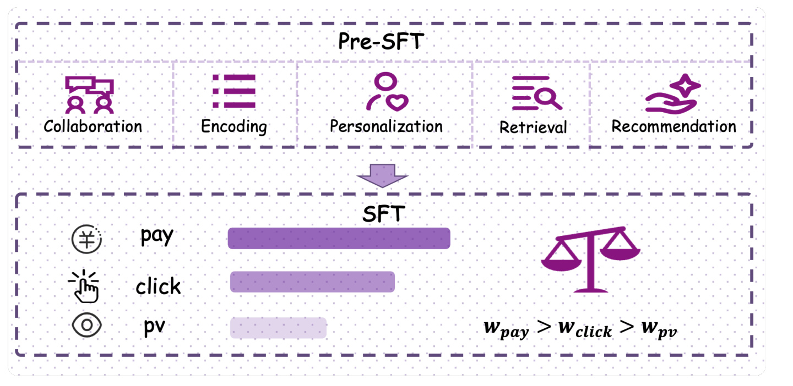
Figure 2 强调训练顺序而不是简单损失相加。 第一阶段以编码、检索、协同、推荐和个性化任务激活离散 SID 与用户意图能力；第二阶段才用 session 多正例和业务优先级权重对齐真实搜索，并同时训练 VRM。若没有 Pre-SFT，0.5B 主干要在稀疏支付信号、查询条件 SID 与多任务价值头之间同时找映射，容易把容量消耗在基础编码上。作者还探索了基于 CTR×CVR 奖励的 GRPO、离线偏好对和动态层级熵，但累计 HR@1000 只增加约 0.52 个百分点，最终线上采用的是 VRM 路线；因此 RL 属于探索性附录方案，不是 TSGR 已部署配置的必要阶段。图中两阶段参数连续继承也很重要：Pre-SFT 不是额外在线模块，部署时不会并列运行五类任务头；它只提供一个更适合离散商品空间的初始化，线上仍由统一的生成—价值模型完成推理。
3. 实验结果
3.1 数据、基线和主指标口径
淘宝主实验使用两周内超过 2 亿条真实搜索交互训练，下一天数据作为测试。论文没有公开原始日志、查询去重方式、用户切分、商品冷启动比例或可复现的数据处理脚本，因此只能核验文中给出的规模与时间划分。模型主干为 Qwen2.5-0.5B，三级 SID 码本大小是 (32768\times8192\times8192)，动态 beam size 依次为 ([400,400,10000])，QP-SID 每簇四种末级次序；SFT 用 AdamW、batch size 256、学习率 (10^{-4})，(lambda=1)，pv/click/pay 权重为 (1/2/3)。
主指标 HitRate@K 计算目标交互商品是否出现在前 K 个候选，论文把 HR@1000 作为召回主指标。FORGE 是随机初始化末级 token 的 SID 基线，每个 SID 最多对应 5 个商品；Pre-Ranking Model 是召回后外接的传统预排。Table 2 按 SID、预处理和后处理三个类别展示方法，且类别内方法互斥：QP-SID 对 FORGE，Pre-SFT 单列，Pre-Ranking、RL 与 VRM 在后处理类别比较。它不是一张逐行累积组件表，不能把每行相邻差额都当成独立增益。
3.2 主离线结果：价值感知把收益推向前 1000
完整数值为：FORGE 在 HR@20/100/500/1000/5000 上分别是 0.4328/0.5863/0.7207/0.7735/0.8604；QP-SID 是 0.4635/0.6235/0.7669/0.8177/0.8961；Pre-SFT 是 0.4694/0.6340/0.7740/0.8222/0.8987；外部 Pre-Ranking 是 0.4248/0.6264/0.8112/0.8552/0.8771；RL 是 0.4659/0.6420/0.7857/0.8277/0.9027；最终 VRM 是 0.4586/0.6677/0.8250/0.8651/0.8953。
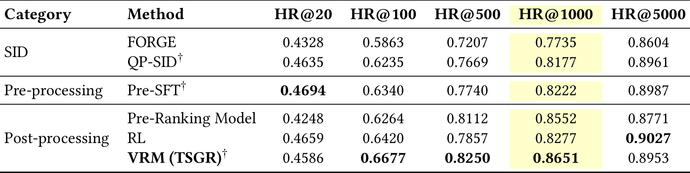
Table 2 最重要的读法是同时看 K 和阶段。 QP-SID 相对 FORGE 的 HR@1000 从 0.7735 到 0.8177，提高 0.0442，即 4.42 个百分点；Pre-SFT 达到 0.8222，证明能力预热继续提供收益。VRM 的 HR@1000 为 0.8651，相对 FORGE 的绝对差是 0.0916，也就是 9.16 个百分点；若计算相对增幅则约为 (0.0916/0.7735=11.84\%)，二者不可混写。VRM 在 HR@100、500、1000 最强，但 HR@20 的 0.4586 低于 Pre-SFT 的 0.4694，HR@5000 的 0.8953 也低于 RL 的 0.9027，说明价值重排主要把合适商品向前 1000 聚集，并非所有截断点都统一占优。
与外部预排相比，VRM 的 HR@1000 从 0.8552 提高到 0.8651，同时 HR@100 和 HR@500 也更高；作者将其归因于共享主干与联合目标减轻分布错配。值得注意的是 Pre-Ranking 的 HR@20 只有 0.4248，低于 FORGE，说明一种排序分数优化前 1000 的覆盖时可能重排掉头部交互商品；单看 HR@1000 会掩盖这个取舍。论文没有提供多随机种子方差、离线显著性、分查询频次或新旧商品分桶，也未给传统多通道线上基线的完整结构，因而“统一模型普遍优于级联预排”的外推仍应限于当前设置。
3.3 QP-SID 消融：路径必须被模型真正使用
作者先从 FORGE 逐步增加效率排序、类目/簇先验、三层合并和并行查询次序。最关键的失败方案是训练标签使用查询条件 SID，但输入历史序列仍使用默认 SID：输入输出次序不一致会削弱复制和层级预测，尤其增加末级梯度后还会伤害前两层。另一种多路径标签方案虽然提供更多候选路径，模型输出却有 99.8% 塌缩到 Default，说明“给一个商品多个 SID”本身不会自动产生多样路由；必须让查询选择规则同时进入训练样本的输入与标签构造。
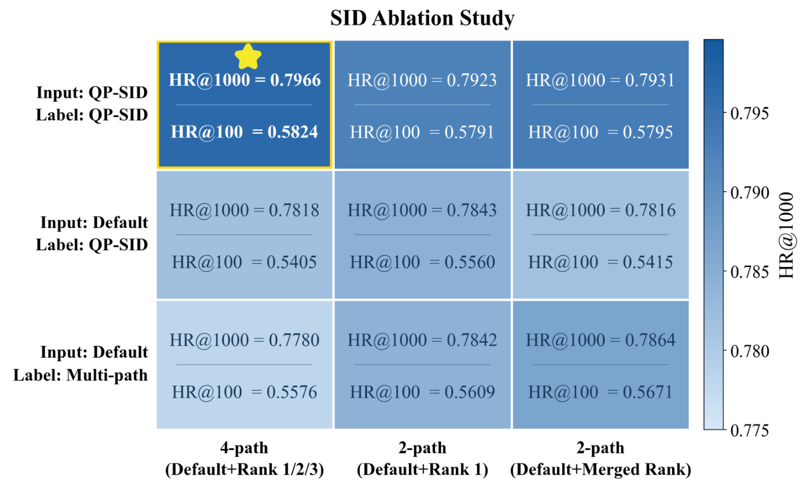
Figure 3 对比输入/标签设置与效率 ID 策略。 最终方案保持历史输入和目标标签的 QP-SID 规则一致，并只为当前查询选中一条末级路径；图中 HR@100 与 HR@1000 的变化显示，任意叠加多路径可能扩大标签空间，却不保证模型能学习何时使用哪条路径。论文的分布表进一步给出：行为序列里 Default 占 55.37%，训练标签里无匹配 Default 只占 23.20%，即 76.8% 标签能命中前三个 term；模型输出 Default 占 32.05%，其余分布到 Rank 1/2/3，表明最终模型没有再次完全塌缩。不过这些比例来自点击日志构造，仍可能继承曝光和头部词偏置。
这个消融支持 QP-SID 的设计细节，却也揭示其依赖项。代表 term 来自过去 30 天点击，80% 覆盖过滤和 top-3 数量是人工规则；季节性、新商品和长尾查询可能没有稳定统计，只能回退 (pi_0)。论文没有报告四路径对索引内存、更新频率、商品迁移或冷启动的额外成本，也没有将硬 term 路由与可学习路由、语义扩展词或更大路径数做系统比较。现有结果证明“四路径一致训练”有效，不等于四是普适最优值。
3.4 VRM：侧信息、交叉注意力与列表目标
VRM 的推理分数消融显示 PV×CTR 在当前 HR 目标上总体最好，PV×CTR×CVR 的 HR@1000 几乎相同；去掉 CVR loss 对结果影响也很小。架构消融则更有解释力：完全移除商品 embedding 会严重损害 HR@20 和 HR@1000，说明 SID 离散化确实丢失细粒度语义；去掉 side-info 对 HR@20 影响更明显，对 HR@1000 较温和；把 cross-attention 换成 mean pooling 或直接用 EOS 表示主要伤害头部命中，因此它们可能是延迟敏感场景的轻量折中，但不能视为等价替代。
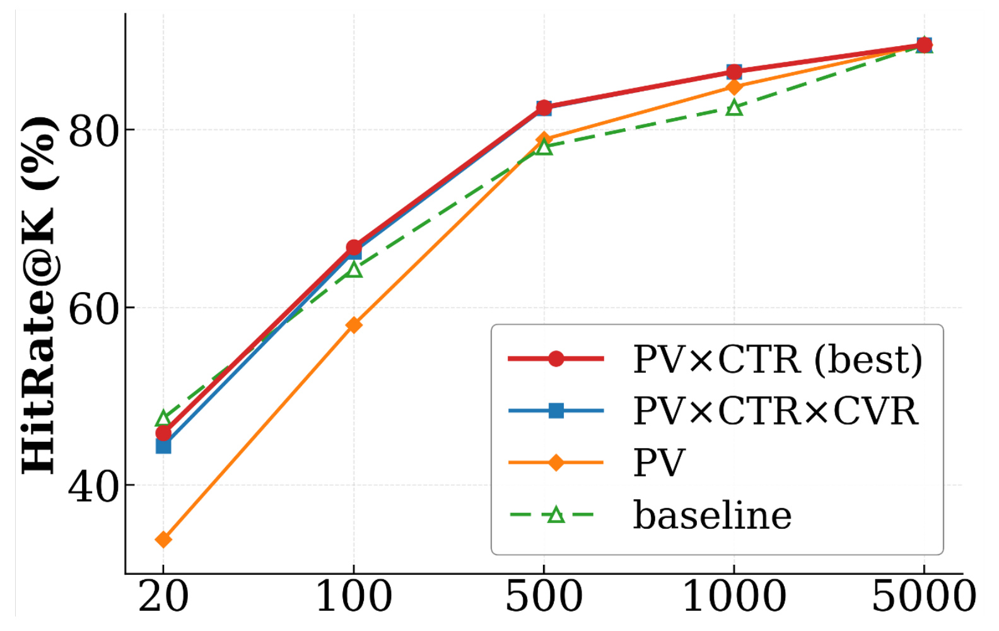
Figure 4 展示候选分数如何汇合，而不是增加一个独立召回器。 生成主干先给出 SID 路径及序列分数，VRM 再为已生成候选计算 PV、CTR、CVR 相关价值，最终以选择的组合重新排序。它解释了为何 VRM 可以让候选直接进入后续精排：传统“召回后再接预排”的功能被吸收进同一个模型服务。不过图本身没有量化共享带来的延迟节省，也没有显示特征表读取、候选批量注意力和分数合并的耗时；“无额外 serving latency”需要线上 profile 才能严格成立。从信息边界看，生成分数主要代表在查询与用户上下文下产生某条 SID 的序列似然，价值分数则读取候选后验特征；二者互补，但若特征过期或候选侧读取失败，统一服务也可能同时影响召回覆盖和重排质量。
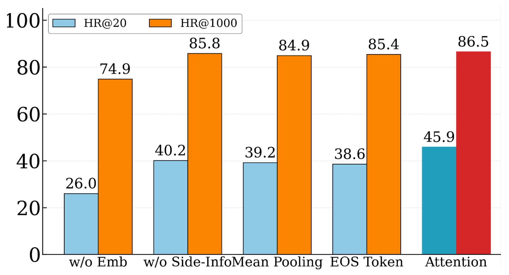
Figure 5 把结构上的三类信息区分开。 用户 prompt 隐状态一方面均值池化形成全局 (u)，另一方面作为 key/value 接受每个候选 (v_k) 的查询，得到候选特定交互 (a_k)；商品侧同时包含结构化特征、连续商品 embedding 和 SID embedding，最后进入多任务头。这种设计能针对某件商品选择用户历史中的相关行为，而非把整段序列压成一个 EOS 向量。它也带来候选数相关的注意力开销，论文虽在 H20、80ms 预算内上线，却没有公开候选批量大小变化下的时延曲线。
训练目标方面，Table 5 的 point-wise HR@1000 为 0.7714，session-wise list-wise 为 0.7922，绝对提高 2.08 个百分点；HR@20/100/500/5000 也从 0.3851/0.5653/0.7188/0.8577 提高到 0.4042/0.5890/0.7405/0.8718。这里论文把加权多正例称为 list-wise，实质是同 session 打包多个优先级正例、隔离标签注意力并按业务层级加权，不是经典的全排列 listwise ranking loss。
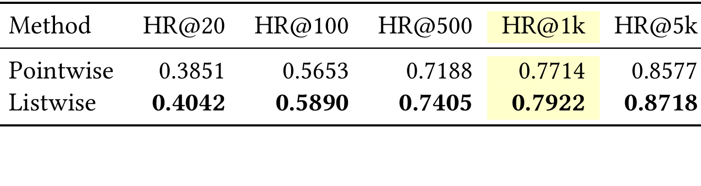
Table 5 为训练单位选择提供了直接证据。 point-wise 每条样本只面对一个目标，容易把曝光、点击和支付都压成等价正例；session-wise 目标保留同一搜索会话中的相对行为强度，并允许多个有效商品共享一次用户上下文。五个 K 值一致改善，说明增益不是只移动前若干候选。局限是表格没有展示不加权多正例、不同 \(1/2/3\) 权重、attention mask 去除或按 session 长度分桶，因此无法判断 2.08 个百分点中有多少来自“多正例”，多少来自权重和样本打包。表内结果是在消融子设置下得到，数值低于主表中的最终 TSGR，不应把 0.7922 再与主表 0.8651 串联相加；它只回答训练目标的相对选择。
3.5 渐进训练与未部署的 RL
Pre-SFT 任务消融以 Encoding 为起点，HR@1000 约 67.77%；增加 Personalization 只带来 +0.04，Collaboration 与 Recommendation 分别约 +1.62、+1.66，Retrieval 单项约 +3.82，多任务融合达到 +5.76。检索任务和最终查询到 SID 目标最接近，因此贡献最大；输出标题的 Personalization 与最终 SID 输出空间不同，收益很小。多任务融合超过任一单项，支持“先分别激活能力，再统一对齐”的训练思路。
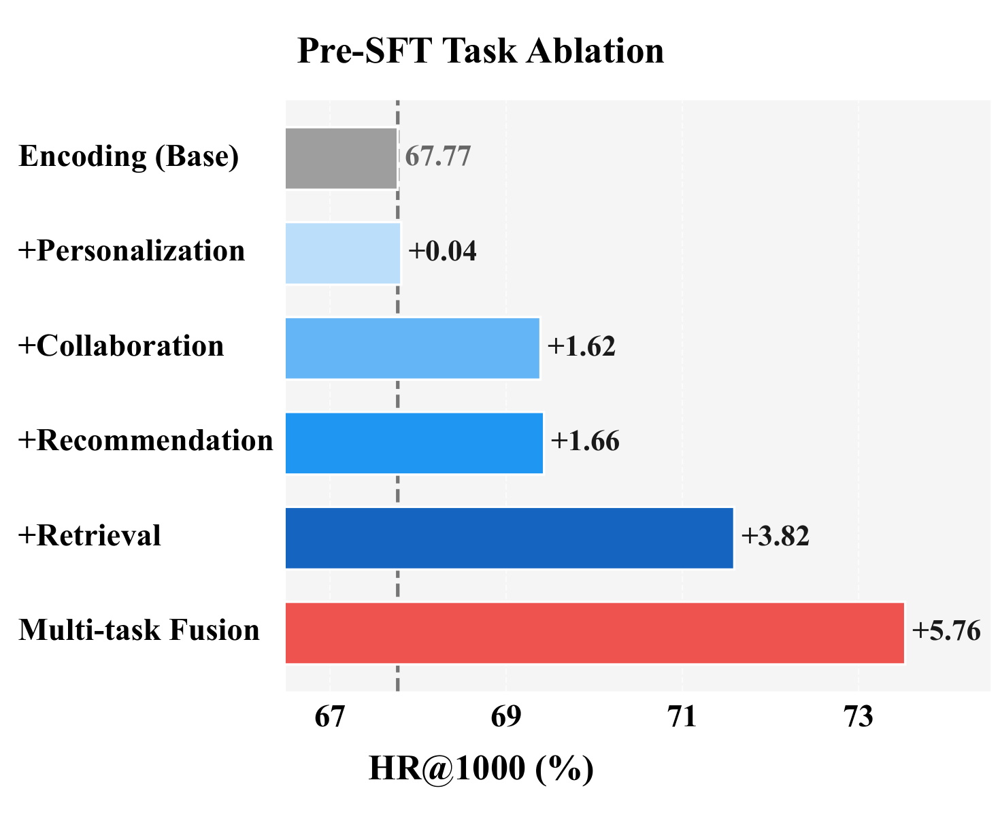
Figure 6 需要按增量能力而非柱高排名来读。 Encoding 建立文本到离散 SID 的基础映射，Retrieval 直接学习查询相关性，Collaboration 与 Recommendation 注入共购和用户序列先验；五任务融合的 +5.76 高于 Retrieval 单项 +3.82，说明辅助任务提供互补信号。但图只给一个汇总 HR@1000，没有不同流量桶、任务采样比例和训练 token 成本。个性化任务几乎无增益也提示，自然语言标题输出与 SID 输出之间存在空间鸿沟，未来更一致的个性化预热目标可能比继续扩大标题生成数据更有效。
作者还实现 GRPO：奖励 (r(s)=\mathrm{CTR}(q,i_s)\times\mathrm{CVR}(q,i_s))，并加入离线偏好对缓解 on-policy rollout 偏头部的问题；层级熵只作用于 SID 前两层，在重叠率较低时鼓励路径探索。附录累计消融从 HR@1000 0.8111 到 0.8163，绝对约 +0.52 个百分点；基本 RL 单独只带来约 +0.02，离线偏好贡献更多。由于收益小于引入 side-info 的 VRM，论文明确说 RL 没有进入实际部署。主表 RL 的 0.8277 也低于 VRM 的 0.8651；因此不能把 RL 和 VRM 的数值串成线上 TSGR 的累积训练阶段。
3.6 线上 A/B：1% 流量、38 天与边界
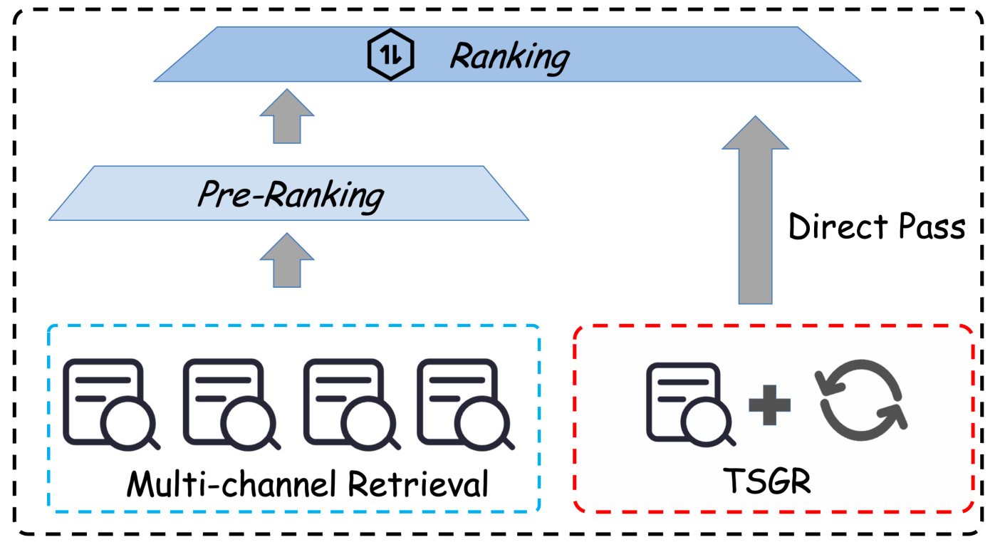
Figure 7 界定了生产改动范围。 TSGR 作为现有多通道召回旁边的一条独立通道接入，内部完成生成和 VRM 重排，其 Top-1500 候选绕过常规预排并直接进入后续 ranking；其他召回源和全局精排仍然存在。因此正文所说“在 treatment 中用单模型替代 retrieval 和 pre-ranking”，应理解为 TSGR 这条处理路径内的替代，而不是把淘宝搜索全部召回与排序改造成一个生成模型。服务运行在 NVIDIA H20 上，延迟预算 80ms，前两级受前缀树约束，第三层做标准 beam search；这些参数证明可部署性，但论文没有给 P50/P95/P99、GPU 利用率或与外部预排的同硬件成本对照。
生产实验承载 1% 实时流量，连续运行 38 天。相对生产基线，论文报告 IPV（商品详情页访问量）+0.43%、Transaction Count（成交笔数）+1.12%、GMV +1.64%，并称三项改善具有统计显著性。持续 38 天比短期离线回放更能覆盖周内周期和模型稳定性，成交与 GMV 也比 HR 更接近业务目标；GMV 增幅高于 IPV，方向上与“更早召回商业价值较高商品”的动机一致。
但线上证据仍有披露边界。论文没有给置信区间、p 值、随机化单位、A/A 校验、实验桶互斥规则、用户或查询层显著性，也没有展示价格带、类目、头尾查询和新老商品分桶。1% 流量能证明该方案在真实生产环境工作，不等于全量扩容后收益保持线性；Top-1500 直接进精排还可能改变下游候选多样性和计算负载。当前最稳妥的结论是：在论文描述的 1% 流量、38 天和既定 H20/80ms 配置下，三项业务指标均为正且作者报告显著，而不是断言所有淘宝流量已获得同等幅度收益。
4. 总结
4.1 我的判断
TSGR 最有价值的贡献，是把生成式召回的商业价值缺口分别放到“标识符”和“候选排序”两个正确位置上处理。QP-SID 没有破坏前两层语义簇，而是在末级给同一商品准备默认与查询条件价值次序；VRM 也没有要求生成前知道未知候选，而是在候选确定后复用主干隐藏状态、补入商品侧信息。两者合起来形成清晰闭环：路径位置增加高价值商品被生成的机会，候选级侧信息再修正仅靠生成概率无法表达的价值差异。Pre-SFT 和加权多正例 SFT 则让这些能力按难度递进，而非一次性从稀疏支付信号中学习。
离线证据总体支持这条机制链。QP-SID 相对 FORGE 在 HR@1000 上增加 4.42 个百分点，VRM 最终达到 0.8651；相对 FORGE 的 0.7735 是 9.16 个百分点、约 11.84% 相对增幅。路径塌缩消融说明并行 SID 不能只增加标签，输入与输出路由必须一致；商品 embedding、side-info、cross-attention 和 session 多正例的消融也能分别对应 VRM 的设计选择。线上 1% 流量、38 天出现 IPV、成交和 GMV 正增益，为“离线命中改善能转化为业务效果”提供了重要但仍不完全透明的生产证据。
4.2 局限与风险
- 数据与复现受限。 淘宝两周 2 亿交互、下一天测试均为私有数据，代码、样本构造、随机种子和端到端脚本未公开；当前结果无法由外部研究者等价复现。
- QP-SID 依赖行为统计。 30 天点击、top-3 term 和 80% 覆盖阈值容易继承曝光偏置，对新品、长尾查询、季节变化与分词错误的鲁棒性没有系统报告。
- 离线指标不完整。 HR@K 只检查已交互商品是否进入候选，不直接测多样性、新颖性、价格公平、卖家生态或长期用户价值；主表也缺少方差与显著性。
- 线上显著性披露不足。 虽然作者称 IPV、成交与 GMV 显著改善，但没有置信区间、p 值、分桶单位和护栏指标，无法独立审计效应稳定性。
- 资源结论仍需 profile。 H20 上 80ms 预算证明方案能运行，却没有 VRM 特征读取、候选交叉注意力、显存和能耗的模块级拆分；“无额外延迟”不宜理解为零成本。
- 模板出版字段无效。 PDF 首页仍出现 Conference acronym、2018、占位 ISBN 与 DOI；在官方会议信息出现前，这篇论文只能记录为 2026-07-21 的 arXiv 预印本。
- RL 不应被包装成线上组件。 GRPO 的累计离线收益约 0.52 个百分点，作者明确未部署；实际 TSGR 结论来自 QP-SID、Pre-SFT、加权 SFT 和 VRM。
4.3 值得继续验证的问题
后续最值得做的是四类对照。第一，用时间切分和新品桶测试 QP-SID，比较硬 term 路由、软路由和语义扩展词，报告路径更新成本与分布漂移。第二，做资源等价的 VRM 对照，在相同 H20 数量、相同 Top-1500 和相同延迟 SLA 下比较外部预排与共享主干，补齐 P50/P95/P99、GPU 利用率、显存和单查询成本。第三，公开线上随机化与置信区间，并观察类目、价格带、头尾查询、卖家集中度及退款等护栏，确认 GMV 增益不是由少数高价类目集中贡献。第四，把 HR 之外的召回多样性和长期指标纳入训练，避免价值感知退化成头部点击放大器。
总体而言，TSGR 不是把“商业价值”作为另一个 prompt 字段塞给生成器，而是利用 SID 的位置偏置和候选后验可见性，各自安排最合适的建模环节。论文对主机制、离线增益和小流量生产可用性给出了连贯证据，对开放复现、线上统计细节、长尾公平和全量资源成本的证据仍不足。若后续补齐这些信息，它会是生成式召回从语义匹配原型走向电商搜索业务闭环的一条重要工程路线。